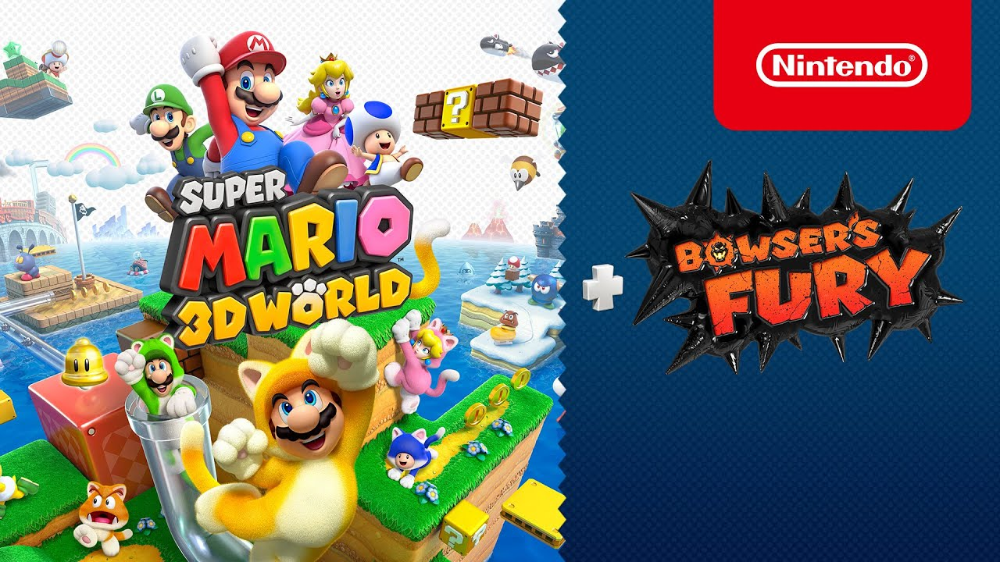

Los Videojuegos más famosos del momento
¿Sabes cuáles son?
ES un videojuego de Battle Royale gratuito lanzado el 10 de mayo de 2020 para PlayStation 4, Xbox One y para PC.
Warzone permite el combate de 150 jugadores en linea, aunque algunos modos de juego por tiempo limitado permite 200
jugadores en linea.

Es un videojuego de Battle Royal gratuito, basado en pelotones, en donde el trabajo en equipo es importate para conseguir la victoria.
Fue lanzado el 4 de febrero de para PlayStation 4, Xbox One y PC.

Es un videojuego del género multijugador de arena de batalla en línea para PC. Fue lanzado el 27 de octubre de 2009

Es un juego de disparos en primera persona en el que dos equipos de cinco jugadores se enfrentan entre ellos.
Además de los consabidos tiros, el objetivo de las partidas es colocar un dispositivo llamado Spike en una zona concreta del mapa.
Fue lanzado el 2 de junio de 2020 por Riot Games.

Es un juego Battle Royale, en el que compiten hasta cien jugadores en solitario o en escuadrones de dos o cuatro miembros.
Los jugadores saltan de un autobús que cruza el mapa en el momento que deseen, empiezan sin armas y las tienen que consiguir en el mapa.
Fue lanzado el 21 de julio de 2017 para PlayStation 4, Xbox One y PC.

La formidable experiencia de sigilo y asesinatos de IO Interactive entrega su edición más grande y ambiciosa.
'Hitman 3' nos devuelve al Agente 47 para invitarnos a dar con las formas más elucubradas de acabar con nuestros objetivos.
Un juego de acción que bien podría catalogarse como puzle. Disponible para PC, PS4, PS5, Xbox One, Xbox Series, Switch y Stadia.
Los fanáticos del terror tienen una cita con Bloober Team y su particular visión del miedo. Tras encandilarnos con
'Layers of Fear' vuelven a jugar con la dualidad de dos mundos, el real y el de los muertos, para meternos de lleno en
'The Medium' una aventura no apta para cardíacos. Disponible para PC y Xbox Series.

El primer Little Nightmares fue un juegazo en el que su particular estética, algo así como si Tim Burton hiciese un juego de terror,
se llevó todas las miradas. Ahora, sin el factor sorpresa, 'Little Nightmares 2' demuestra que también puede ganarse toda nuestra atención en lo jugable.
Una oportunidad en la que sólo flaqueó en el pasado por exceso de facilidad. Disponible para PC, PS4, Xbox One y Switch.

Tras convertirse en uno de los plataformas más celebrados del fontanero de Nintendo y caer en cierta medida en el olvido por la maldición de Wii U, 'Super Mario 3D World' vuelve a la vida para demostrar todo su potencial a quienes no le echasen el guante en el pasado. Además lo hace con 'Bowser's Fury' una nueva aventura para facilitar aún más -si cabe- el trago a quienes ya lo jugaron. Disponible para Switch.
Housemarque se ha convertido en uno de esos estudios que se dejan ver en contadas ocasiones, pero cuando lo hacen es para sentar cátedra. Los reyes de los tiros estilo matamarcianos vuelven a la carga con la que probablemente sea su marcianada más extrema. Disponible para PS5.